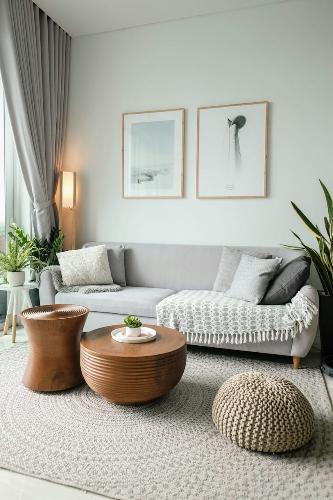
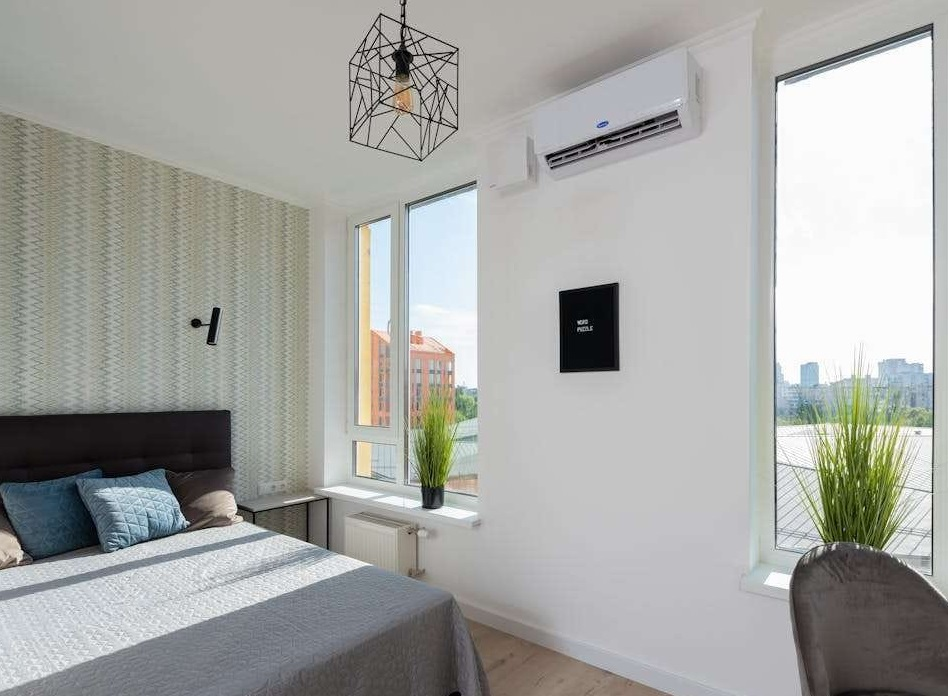
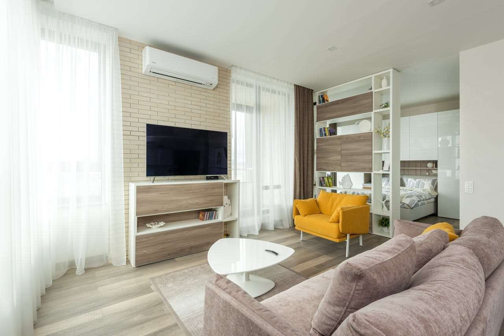

PROFOUNDGRID
A RESPONSIVE GRID SYSTEM FOR FIXED AND FLUID LAYOUTS.BUILT
IN SCSS
,IT GIVES YOU FLEXIBILITY AND FULL CONTROL
RESPONSIVE

SEMANTIC

PRECISE

VideosA bedroom is a private space designed for rest and sleep, typically furnished with a
bed, wardrobe, and personal items. It serves as a retreat for relaxation and personal time. A guestroom
is a dedicated space in a home meant to accommodate visitors, offering basic comforts like a bed,
closet, and sometimes an attached bathroom. It reflects hospitality and convenience. The hallroom or
living room is a central, shared area used for gatherings, entertainment, and relaxation, often equipped
with sofas, a TV, and décor. It connects other rooms and sets the tone for the home atmosphere and
style.
VideoThe hallroom, commonly known as the living room, is the central space in a home used
for relaxation, entertainment, and social gatherings. It typically contains furniture like sofas,
chairs, a coffee table, and entertainment units such as a television. The hallroom often reflects the
overall decor and style of the house, making it a welcoming space for both residents and guests. It
serves as a connecting area to other rooms and is ideal for family time, reading, watching TV, or
hosting visitors. The hallroom plays a key role in daily living and home ambiance.
The A guestroom is a room in a house specifically prepared for visitors to stay
comfortably. It usually includes a bed, basic furniture like a chair, table, and wardrobe, and may have
an attached bathroom. The purpose of a guestroom is to offer a welcoming and private space for guests,
making them feel at home. It is often decorated simply but thoughtfully, with clean linens, towels, and
sometimes small amenities like toiletries or reading material. Guestrooms reflect the hospitality of the
host and are commonly found in both modern homes and hotels.
EXAMPLE
VideosProvides a powerfull way to help you prove your point when you click online video
you can paste in the embed code for the video you want to add you can also type a keyword to search
online for the video that best fits your documents
VideoProvides a powerfull way to help you prove your point when you click online video you
can paste in the embed code for the video you want to add you can also type a keyword to search online
for the video that best fits your documents
TheProvides a powerfull way to help you prove your point when you click online video you
can paste in the embed code for the video you want to add you can also type a keyword to search online
for the video that best fits your documents